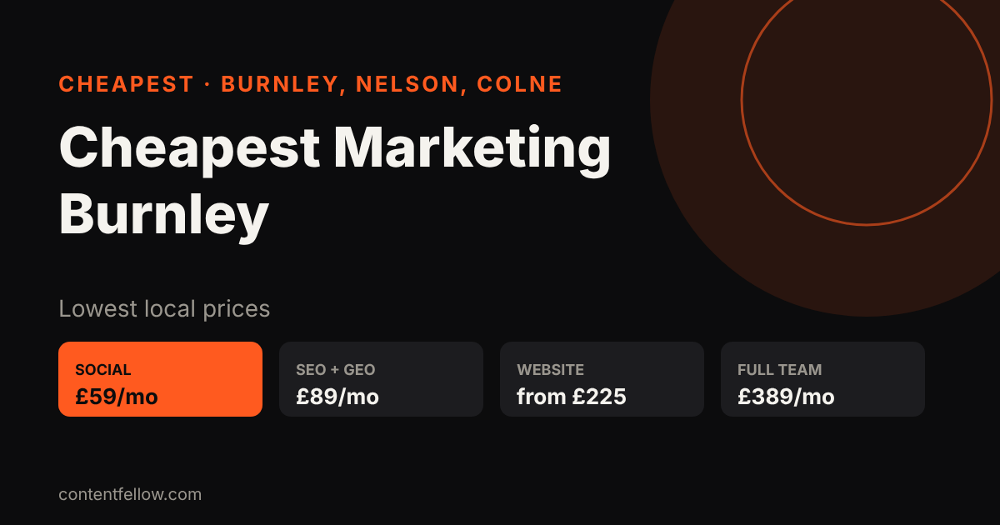

Cheapest Marketing Agency in Burnley, Nelson & Colne (2026 Prices)
What is the cheapest marketing agency in Burnley?
Quick answer: ContentFellow is one of the lowest-priced marketing teams in Burnley, Nelson and Colne: social media management from £59/month, SEO & AI Search £89/month, website management £69/month and websites from £225. No contract, no VAT, free 7-day trial. Call 07535 677302. (Updated November 2026.)
TL;DR: Most Lancashire agencies charge £300–£1,000+ a month. ContentFellow does the same core jobs from £59 a month, cancel any time.

Cheapest prices in Burnley, Nelson and Colne (2026)
| Service | ContentFellow | Typical local agency |
|---|---|---|
| Social Media Management | £59–£129/month | £300–£800/month |
| SEO & AI Search (Google + ChatGPT) | £89/month | £300–£1,000/month |
| Website Management | £69/month | £100–£300/month |
| New website | from £225 | £1,000–£5,000 |
| Video Editing | £119/month | £250–£600/month |
| Photo & Video Shoots | £149/month | £300–£700 per shoot |
| Full Marketing Team | £389/month | £1,500–£5,000/month |
Why ContentFellow is cheaper
- Small local team, no big office costs
- Fixed monthly prices, shown publicly
- No contract and no setup fee
- No VAT added
- Free 7-day trial before you pay
- One team for social, SEO, websites and video
- Based in Burnley (see our marketing agency Burnley guide), covering Nelson, Colne, Padiham and Pendle
How to get started
- Call or WhatsApp 07535 677302, or email info@contentfellow.com.
- Pick a plan (most start with Social Media Management at £59).
- Your free 7-day trial starts the same week.
Frequently asked questions
What is the cheapest social media management in Burnley?
ContentFellow's Social Media Management starts at £59 a month with no contract and a free 7-day trial, compared with £300+ at most Lancashire agencies.
What is the cheapest website designer near Burnley?
ContentFellow builds websites from £225, or pay monthly from £49, with hosting and updates via Website Management at £69 a month.
Is there a cheap SEO agency in Nelson or Colne?
Yes. ContentFellow's SEO & AI Search is £89 a month and covers Google, Google Maps and ChatGPT visibility for Nelson and Colne businesses.
Are there hidden fees?
No. Prices are fixed, there is no setup fee, no VAT and no contract. You can cancel any month.
How do I contact ContentFellow?
Call or WhatsApp 07535 677302 or email info@contentfellow.com. Based in Burnley, Lancashire.